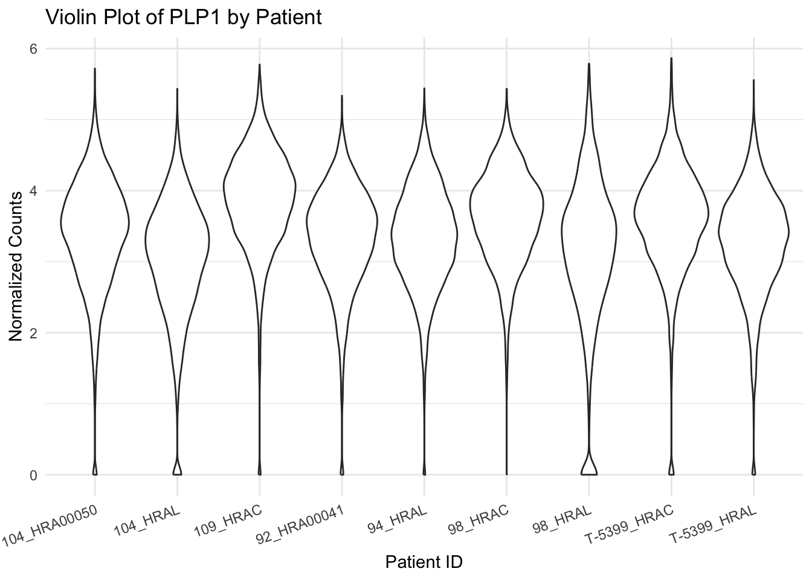

Human spine data overview
Chih-Hsuan Wu
Last updated: 2024-10-17
Checks: 7 0
Knit directory: DEanalysis/
This reproducible R Markdown analysis was created with workflowr (version 1.7.1). The Checks tab describes the reproducibility checks that were applied when the results were created. The Past versions tab lists the development history.
Great! Since the R Markdown file has been committed to the Git repository, you know the exact version of the code that produced these results.
Great job! The global environment was empty. Objects defined in the global environment can affect the analysis in your R Markdown file in unknown ways. For reproduciblity it’s best to always run the code in an empty environment.
The command set.seed(20230508) was run prior to running
the code in the R Markdown file. Setting a seed ensures that any results
that rely on randomness, e.g. subsampling or permutations, are
reproducible.
Great job! Recording the operating system, R version, and package versions is critical for reproducibility.
Nice! There were no cached chunks for this analysis, so you can be confident that you successfully produced the results during this run.
Great job! Using relative paths to the files within your workflowr project makes it easier to run your code on other machines.
Great! You are using Git for version control. Tracking code development and connecting the code version to the results is critical for reproducibility.
The results in this page were generated with repository version 3cc527a. See the Past versions tab to see a history of the changes made to the R Markdown and HTML files.
Note that you need to be careful to ensure that all relevant files for
the analysis have been committed to Git prior to generating the results
(you can use wflow_publish or
wflow_git_commit). workflowr only checks the R Markdown
file, but you know if there are other scripts or data files that it
depends on. Below is the status of the Git repository when the results
were generated:
Ignored files:
Ignored: .Rhistory
Ignored: .Rproj.user/
Ignored: data/.Rhistory
Untracked files:
Untracked: .DS_Store
Untracked: .gitignore
Untracked: analysis/analysis_humanspine.Rmd
Untracked: analysis/simulation_donor_effect.Rmd
Untracked: data/.DS_Store
Untracked: data/10X_DEresult_update.RData
Untracked: data/10X_DEresult_update2.RData
Untracked: data/10X_Kang_DEresult.RData
Untracked: data/10X_inputdata.RData
Untracked: data/10X_inputdata_DEresult.RData
Untracked: data/10X_inputdata_cpm.RData
Untracked: data/10X_inputdata_integrated.RData
Untracked: data/10X_inputdata_lognorm.RData
Untracked: data/10Xdata_annotate.rds
Untracked: data/Bcells.Rmd
Untracked: data/Bcellsce.rds
Untracked: data/Kang_DEresult.RData
Untracked: data/Kang_data.RData
Untracked: data/fallopian_tubes.RData
Untracked: data/fallopian_tubes_all.RData
Untracked: data/human/
Untracked: data/human_spine.RData
Untracked: data/human_spine_DEresult.RData
Untracked: data/mouse/
Untracked: data/permutation.RData
Untracked: data/permutation13.RData
Untracked: data/permutation2.RData
Untracked: data/splatter_simulation1.RData
Untracked: data/splatter_simulation2.RData
Untracked: data/vstcounts.Rdata
Untracked: figure/
Unstaged changes:
Modified: analysis/.Rhistory
Modified: analysis/CD14+-Monocytes.Rmd
Modified: code/DE_methods.R
Note that any generated files, e.g. HTML, png, CSS, etc., are not included in this status report because it is ok for generated content to have uncommitted changes.
These are the previous versions of the repository in which changes were
made to the R Markdown (analysis/human_spine_overview.Rmd)
and HTML (docs/human_spine_overview.html) files. If you’ve
configured a remote Git repository (see ?wflow_git_remote),
click on the hyperlinks in the table below to view the files as they
were in that past version.
| File | Version | Author | Date | Message |
|---|---|---|---|---|
| Rmd | 3cc527a | C-HW | 2024-10-17 | adjust xlabel |
| html | 7fed56c | C-HW | 2024-10-17 | Build site. |
| Rmd | c744e05 | C-HW | 2024-10-17 | workflowr::wflow_publish("./analysis/human_spine_overview.Rmd") |
Data introduction
For this case study, we are analyzing an scRNA-seq dataset that comprises human spine cells. The dataset consists of a total of 48644 cells contributed by 9 donors. After removing ambiguous genes and only keeping common genes across all samples, it includes sequencing data for 8092 genes.
In this project, we utilize four distinct counts as inputs.
Raw data: This refers to the raw counts without any normalization or adjustments applied.
Seurat normalized data: This data type represents the counts from each input sample after normalization using the ‘Seurat::NormalizeData(x, normalization.method = “LogNormalize”, scale.factor = 10000)’ function. This normalization method helps to account for differences in library sizes between samples and scales the data by a factor of 10,000.
Integrated data (Only for clustering result): The integrated data refers to the normalized counts after removing batch effects (Seurat v5 integration workflow). The workflow generates an integrated dimensional reduction embedding which can be used as input for clustering.
CPM data: CPM stands for Counts Per Million. This data is obtained by dividing the counts by the sum of library counts and multiplying the result by a million. The CPM values provide a normalized representation of the expression levels, allowing for meaningful comparisons between samples while accounting for differences in library sizes.
VST data: VST data (variance stabilizing transformation) is computed via the sctransform package (Hafemeister and Satija 2019), which returns Pearson residuals from a regularized negative binomial regression model that can be interpreted as normalized expression values.
Library size
UMAP
Variation of a single gene on different level

| Version | Author | Date |
|---|---|---|
| 7fed56c | C-HW | 2024-10-17 |

| Version | Author | Date |
|---|---|---|
| 7fed56c | C-HW | 2024-10-17 |
R version 4.4.1 (2024-06-14)
Platform: x86_64-apple-darwin20
Running under: macOS Monterey 12.6
Matrix products: default
BLAS: /Library/Frameworks/R.framework/Versions/4.4-x86_64/Resources/lib/libRblas.0.dylib
LAPACK: /Library/Frameworks/R.framework/Versions/4.4-x86_64/Resources/lib/libRlapack.dylib; LAPACK version 3.12.0
locale:
[1] en_US.UTF-8/en_US.UTF-8/en_US.UTF-8/C/en_US.UTF-8/en_US.UTF-8
time zone: America/Chicago
tzcode source: internal
attached base packages:
[1] stats4 stats graphics grDevices utils datasets methods
[8] base
other attached packages:
[1] scater_1.32.1 scuttle_1.14.0
[3] Seurat_5.1.0 SeuratObject_5.0.2
[5] sp_2.1-4 SingleCellExperiment_1.26.0
[7] SummarizedExperiment_1.34.0 Biobase_2.64.0
[9] GenomicRanges_1.56.2 GenomeInfoDb_1.40.1
[11] IRanges_2.38.1 S4Vectors_0.42.1
[13] BiocGenerics_0.50.0 MatrixGenerics_1.16.0
[15] matrixStats_1.4.1 dplyr_1.1.4
[17] ggplot2_3.5.1
loaded via a namespace (and not attached):
[1] RColorBrewer_1.1-3 rstudioapi_0.16.0
[3] jsonlite_1.8.9 magrittr_2.0.3
[5] ggbeeswarm_0.7.2 spatstat.utils_3.1-0
[7] farver_2.1.2 rmarkdown_2.28
[9] zlibbioc_1.50.0 fs_1.6.4
[11] vctrs_0.6.5 ROCR_1.0-11
[13] DelayedMatrixStats_1.26.0 spatstat.explore_3.3-2
[15] S4Arrays_1.4.1 htmltools_0.5.8.1
[17] BiocNeighbors_1.22.0 SparseArray_1.4.8
[19] sass_0.4.9 sctransform_0.4.1
[21] parallelly_1.38.0 KernSmooth_2.23-24
[23] bslib_0.8.0 htmlwidgets_1.6.4
[25] ica_1.0-3 plyr_1.8.9
[27] plotly_4.10.4 zoo_1.8-12
[29] cachem_1.1.0 whisker_0.4.1
[31] igraph_2.0.3 mime_0.12
[33] lifecycle_1.0.4 pkgconfig_2.0.3
[35] rsvd_1.0.5 Matrix_1.7-0
[37] R6_2.5.1 fastmap_1.2.0
[39] GenomeInfoDbData_1.2.12 fitdistrplus_1.2-1
[41] future_1.34.0 shiny_1.9.1
[43] digest_0.6.37 colorspace_2.1-1
[45] patchwork_1.3.0 rprojroot_2.0.4
[47] tensor_1.5 RSpectra_0.16-2
[49] irlba_2.3.5.1 beachmat_2.20.0
[51] labeling_0.4.3 progressr_0.14.0
[53] fansi_1.0.6 spatstat.sparse_3.1-0
[55] httr_1.4.7 polyclip_1.10-7
[57] abind_1.4-8 compiler_4.4.1
[59] withr_3.0.1 BiocParallel_1.38.0
[61] viridis_0.6.5 fastDummies_1.7.4
[63] highr_0.11 MASS_7.3-61
[65] DelayedArray_0.30.1 tools_4.4.1
[67] vipor_0.4.7 lmtest_0.9-40
[69] beeswarm_0.4.0 httpuv_1.6.15
[71] future.apply_1.11.2 goftest_1.2-3
[73] glue_1.8.0 nlme_3.1-166
[75] promises_1.3.0 grid_4.4.1
[77] Rtsne_0.17 cluster_2.1.6
[79] reshape2_1.4.4 generics_0.1.3
[81] gtable_0.3.5 spatstat.data_3.1-2
[83] tidyr_1.3.1 data.table_1.16.2
[85] ScaledMatrix_1.12.0 BiocSingular_1.20.0
[87] XVector_0.44.0 utf8_1.2.4
[89] spatstat.geom_3.3-3 RcppAnnoy_0.0.22
[91] ggrepel_0.9.6 RANN_2.6.2
[93] pillar_1.9.0 stringr_1.5.1
[95] spam_2.11-0 RcppHNSW_0.6.0
[97] later_1.3.2 splines_4.4.1
[99] lattice_0.22-6 survival_3.7-0
[101] deldir_2.0-4 tidyselect_1.2.1
[103] miniUI_0.1.1.1 pbapply_1.7-2
[105] knitr_1.48 git2r_0.33.0
[107] gridExtra_2.3 scattermore_1.2
[109] xfun_0.48 UCSC.utils_1.0.0
[111] stringi_1.8.4 workflowr_1.7.1
[113] lazyeval_0.2.2 yaml_2.3.10
[115] evaluate_1.0.1 codetools_0.2-20
[117] tibble_3.2.1 cli_3.6.3
[119] uwot_0.2.2 xtable_1.8-4
[121] reticulate_1.39.0 munsell_0.5.1
[123] jquerylib_0.1.4 Rcpp_1.0.13
[125] globals_0.16.3 spatstat.random_3.3-2
[127] png_0.1-8 spatstat.univar_3.0-1
[129] parallel_4.4.1 dotCall64_1.2
[131] sparseMatrixStats_1.16.0 listenv_0.9.1
[133] viridisLite_0.4.2 scales_1.3.0
[135] ggridges_0.5.6 crayon_1.5.3
[137] leiden_0.4.3.1 purrr_1.0.2
[139] rlang_1.1.4 cowplot_1.1.3